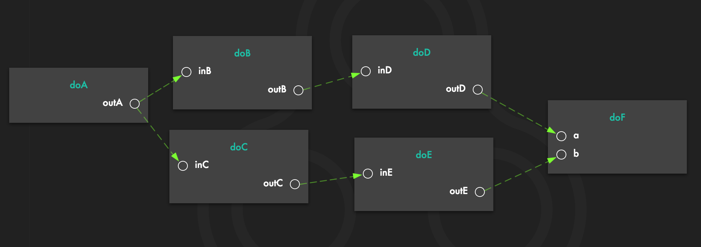

coding with CONNECT looks like this
you just outline your logic in an intuitive way, and it works. all you need to do is to connect (pun intended) building blocks at your disposal to form your own unique business logic.


you just outline your logic in an intuitive way, and it works. all you need to do is to connect (pun intended) building blocks at your disposal to form your own unique business logic.
you can see the flow of the code, all the values being transmitted, and even the precise time each node is consuming to do its task.
because we think the problem stems from the fact that our current development process is essentially two separate processes mashed into each other:
i.e. building blocks that are not specific to your business logic, stuff like authentication, querying a database, etc.
i.e. composing those building blocks to form a unique business logic.
CONNECT allows you to separate these two layers, bring your already working building blocks with one-additional line of code and connect them visually to form the macrologic of your product.
but also, backend logic is essentially asynchronous, which means its flow is more of a graph rather than the usual sequence of synchronous logic, and as a result using the same representation (i.e. a chain) would always be sub-optimal.
for example, a simple asynchronous flow like this:
would be coded like this:
doA().then(function(outA) {
Promise.all([
new Promise(function(resolve) {
doB(outA).then(function(outB) {
doD(outB).then(function(outD) {
resolve(outD);
});
});
}),
new Promise(function(resolve) {
doC(outA).then(function(outC) {
doE(outC).then(function(outE) {
resolve(outE);
});
});
})
]).then(function(values) {
doF(values[0], values[1]);
});
});
currently, CONNECT platform is an open-source nodejs package, which you can easily install and use on your nodejs projects:
npm install connect-platform --save
for more information on how to configure and use CONNECT, take a look at this guide.
we are also working on building a platform as a service (PaaS) for CONNECT platform, so that you would not need to care about deployment and dev ops as well and could just focus on your backend logic. while that is yet to be released, you can check out an immutable demo here.
the core of CONNECT platform is an open-source project, which means that we would really appreciate it if you would want to take a look at the code and/or even contribute.
# clone from git
git clone https://github.com/loreanvictor/connect-platform.git
# go to the directory
cd connect
cd platform
# install dependencies
npm install
# go to panel directory and install its dependencies
cd panel
npm install
# build the panel
npm run angular-build
# go back and start the project
cd ..
npm start
for contribution, please take a look at this document as well, and get in touch if you have any questions or even if you just want to chat ;)